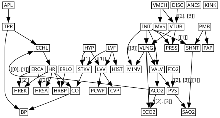

Alarm data
Requires internet: the “Baseline” section near the end fetches the true ALARM network from the bnlearn repository via pgmpy.utils.get_example_model. Everything above it runs offline from the packaged dataset.
[1]:
import random
import time
from causallearn.search.ConstraintBased.PC import pc
from causallearn.utils.cit import chisq
import pandas as pd
import cslearn.scoring as sc
import cslearn.learning as ctl
import cslearn.ldag as ldag
import numpy as np
%load_ext autoreload
%autoreload 2
/home/alex/projects/cstrees/code/.devenv/state/venv/lib/python3.13/site-packages/tqdm/auto.py:21: TqdmWarning: IProgress not found. Please update jupyter and ipywidgets. See https://ipywidgets.readthedocs.io/en/stable/user_install.html
from .autonotebook import tqdm as notebook_tqdm
Read data
[2]:
# Load the packaged copy of the ALARM data (resolves regardless of the
# working directory the notebook is run from).
from importlib.resources import files
import cslearn.datasets
alarmdf = pd.read_csv(files(cslearn.datasets) / 'alarm.csv')
alarmdf = alarmdf.drop(columns=['Unnamed: 0'])
alarmdf.head()
[2]:
| CVP | PCWP | HIST | TPR | BP | CO | HRBP | HREK | HRSA | PAP | ... | ERLO | HR | ERCA | SHNT | PVS | ACO2 | VALV | VLNG | VTUB | VMCH | |
|---|---|---|---|---|---|---|---|---|---|---|---|---|---|---|---|---|---|---|---|---|---|
| 0 | NORMAL | NORMAL | False | LOW | NORMAL | HIGH | HIGH | HIGH | HIGH | NORMAL | ... | False | HIGH | False | NORMAL | NORMAL | NORMAL | HIGH | LOW | ZERO | NORMAL |
| 1 | NORMAL | NORMAL | False | NORMAL | LOW | LOW | HIGH | HIGH | HIGH | NORMAL | ... | False | HIGH | False | NORMAL | LOW | LOW | ZERO | ZERO | LOW | NORMAL |
| 2 | NORMAL | HIGH | False | NORMAL | NORMAL | HIGH | HIGH | HIGH | HIGH | NORMAL | ... | False | HIGH | False | NORMAL | LOW | LOW | ZERO | ZERO | LOW | NORMAL |
| 3 | NORMAL | NORMAL | False | LOW | LOW | HIGH | HIGH | HIGH | HIGH | NORMAL | ... | False | HIGH | False | NORMAL | NORMAL | LOW | ZERO | ZERO | LOW | NORMAL |
| 4 | NORMAL | NORMAL | False | LOW | LOW | NORMAL | HIGH | HIGH | HIGH | NORMAL | ... | False | HIGH | False | NORMAL | LOW | LOW | ZERO | ZERO | LOW | NORMAL |
5 rows × 37 columns
Convert all the outcomes into numeric values.
[3]:
alarmnp = alarmdf.to_numpy()
alarmnp[:,0] = [0 for i in range(20000)]
def convertToNumeric(df):
npdf = df.to_numpy()
vars = list(df.columns)
n = len(df)
for v in vars:
j = vars.index(v)
states = list(alarmdf[v].drop_duplicates().to_numpy())
for i in range(n):
npdf[i,j] = states.index(alarmdf[v].iloc[i])
numdf = pd.DataFrame(npdf)
return numdf
numalarmdf = convertToNumeric(alarmdf)
cards_row = {0 : 3, 1 : 3, 2 : 2, 3 : 3, 4 : 3, 5 : 3, 6 : 3, 7 : 3, 8 : 3, 9 : 3, 10 : 3, 11 : 2, 12 : 4, 13 : 4, 14 : 4, 15 : 3, 16 : 2, 17 : 2, 18 : 2, 19 : 2, 20 : 2, 21 : 3, 22 : 2, 23 : 2, 24 : 3, 25 : 3, 26 : 2, 27 : 2, 28 : 3, 29 : 2, 30 : 2, 31 : 3, 32 : 3, 33 : 4, 34 : 4, 35 : 4, 36 : 4}
numalarmdf.loc[len(numalarmdf)] = cards_row
target_row = 20000
# Move target row to first element of list.
idx = [target_row] + [i for i in range(len(numalarmdf)) if i != target_row]
numalarmdf.iloc[idx]
numalarmdf_cards = numalarmdf.iloc[idx].reset_index(drop=True)
numalarmdf_cards.columns = alarmdf.columns
MCMC sampling
We run the PC algorithm to estimate a CPDAG that is used to restrict the possible context variables.
[4]:
np.random.seed(1)
random.seed(1)
start = time.time()
pcgraph = pc(numalarmdf_cards[1:].values, 0.05, "chisq", node_names=numalarmdf_cards.columns)
poss_cvars = ctl.causallearn_graph_to_posscvars(pcgraph, labels=numalarmdf_cards.columns)
#print("Possible context variables per node:", poss_cvars)
score_table, context_scores, context_counts = sc.order_score_tables(numalarmdf_cards,
max_cvars=2,
alpha_tot=1.0,
method="BDeu",
poss_cvars=poss_cvars)
orders, scores = ctl.gibbs_order_sampler(5000, score_table)
print('Phase 1 (PC) + Phase 2 (Gibbs order sampler) time in seconds:', time.time() - start)
Depth=4, working on node 36: 100%|██████████| 37/37 [00:00<00:00, 920.63it/s]
Context score tables: 100%|██████████| 37/37 [00:00<00:00, 83.79it/s]
Creating #stagings tables: 100%|██████████| 37/37 [00:00<00:00, 4829.89it/s]
Order score tables: 100%|██████████| 37/37 [00:00<00:00, 880.83it/s]
Gibbs order sampler: 100%|██████████| 5000/5000 [00:01<00:00, 2572.43it/s]
Phase 1 (PC) + Phase 2 (Gibbs order sampler) time in seconds: 5.439443588256836
[5]:
# optimal variable ordering
alarmmaporder = orders[scores.index(max(scores))]
#print(alarmmaporder)
[6]:
# Phase 3: exact staging search, given the MAP order. This cell produces the
# final learned CStree; `start` is still the timer from the Phase 1+2 cell,
# so this prints the end-to-end time for all three phases of Algorithm 1.
alarmopttree = ctl._optimal_cstree_given_order(alarmmaporder, context_scores)
print('Full pipeline (Phases 1-3) time in seconds:', time.time() - start)
Full pipeline (Phases 1-3) time in seconds: 5.5076282024383545
LDAG representation
[7]:
LDAG = alarmopttree.to_LDAG()
[8]:
agraph = LDAG.plot_graphviz(
nodesep="0.06", ranksep="0.1", margin="0.02,0.01",
no_constraint_edges=[("ACO2", "CCHL")],
)
agraph.draw("source_alarm_ldag_repr_13_0.pdf")
# Losslessly crop to the drawing's ink bounding box (+3pt margin) by rewriting
# the page box in place -- no re-rendering, so the embedded 10pt font is
# untouched. Requires ghostscript on PATH (`nix-shell -p ghostscript` if not
# already available) and the `pikepdf` package.
import subprocess
import pikepdf
def crop_to_content(path, margin=3.0):
result = subprocess.run(
["gs", "-q", "-dBATCH", "-dNOPAUSE", "-sDEVICE=bbox", path],
capture_output=True, text=True, check=True,
)
line = [l for l in result.stderr.splitlines() if l.startswith("%%HiResBoundingBox:")][0]
x0, y0, x1, y1 = (float(v) for v in line.split(":")[1].split())
box = pikepdf.Array([x0 - margin, y0 - margin, x1 + margin, y1 + margin])
pdf = pikepdf.open(path, allow_overwriting_input=True)
pdf.pages[0].MediaBox = box
pdf.pages[0].CropBox = box
pdf.save(path)
crop_to_content("source_alarm_ldag_repr_13_0.pdf")
agraph
[8]:

Baseline: plain DAG (PC only), SHD vs. the true ALARM network
As a non-CSI baseline, we compare a plain DAG learned by PC alone (no CSlearn context-specific refinement) against the true ALARM network structure, and compare that SHD to the SHD of CSlearn’s LDAG (converted from its learned CStree, as above) against the same ground truth.
The true ALARM network structure is fetched from the bnlearn repository via pgmpy; its node names are relabeled to the abbreviated variable codes used throughout this notebook (matching the descriptions in the accompanying variable table).
[9]:
from pgmpy.utils import get_example_model
from cslearn.evaluate import shd_edges
# Maps bnlearn's full node names to the abbreviated codes used in this
# notebook (see the variable table in the paper's supplement for the
# descriptions).
long_to_abbrev = {
"CVP": "CVP", "PCWP": "PCWP", "HISTORY": "HIST", "TPR": "TPR", "BP": "BP", "CO": "CO",
"HRBP": "HRBP", "HREKG": "HREK", "HRSAT": "HRSA", "PAP": "PAP", "SAO2": "SAO2",
"FIO2": "FIO2", "PRESS": "PRSS", "EXPCO2": "ECO2", "MINVOL": "MINV", "MINVOLSET": "MVS",
"HYPOVOLEMIA": "HYP", "LVFAILURE": "LVF", "ANAPHYLAXIS": "APL", "INSUFFANESTH": "ANES",
"PULMEMBOLUS": "PMB", "INTUBATION": "INT", "KINKEDTUBE": "KINK", "DISCONNECT": "DISC",
"LVEDVOLUME": "LVV", "STROKEVOLUME": "STKV", "CATECHOL": "CCHL", "ERRLOWOUTPUT": "ERLO",
"HR": "HR", "ERRCAUTER": "ERCA", "SHUNT": "SHNT", "PVSAT": "PVS", "ARTCO2": "ACO2",
"VENTALV": "VALV", "VENTLUNG": "VLNG", "VENTTUBE": "VTUB", "VENTMACH": "VMCH",
}
true_alarm_model = get_example_model("alarm")
true_edges = {(long_to_abbrev[u], long_to_abbrev[v]) for u, v in true_alarm_model.edges()}
print(f"True ALARM network: {true_alarm_model.number_of_nodes()} nodes, {len(true_edges)} edges")
True ALARM network: 37 nodes, 46 edges
[10]:
pc_dag_df = ctl.causallearn_graph_to_dag(pcgraph, labels=numalarmdf_cards.columns, alg="pc")
pc_edges = {(u, v) for u in pc_dag_df.index for v in pc_dag_df.columns if pc_dag_df.loc[u, v] == 1}
cslearn_edges = set(LDAG.edges())
pc_shd = shd_edges(pc_edges, true_edges)
cslearn_shd = shd_edges(cslearn_edges, true_edges)
print(f"PC-only DAG: {len(pc_edges)} edges, SHD vs. true = {pc_shd}")
print(f"CSlearn's LDAG: {len(cslearn_edges)} edges, SHD vs. true = {cslearn_shd}")
TP = len(cslearn_edges & true_edges)
FP = len(cslearn_edges - true_edges)
n_nodes = true_alarm_model.number_of_nodes()
n_offdiag = n_nodes * n_nodes - n_nodes
TN = n_offdiag - TP - FP - len(true_edges - cslearn_edges)
accuracy = (TP + TN) / n_offdiag
print(f"CSlearn's LDAG: TP={TP}, FP={FP}")
print(f"CSlearn's LDAG: TP/{len(true_edges)}={TP/len(true_edges):.3f}, "
f"FP/{len(true_edges)}={FP/len(true_edges):.3f}")
print(f"CSlearn's LDAG (unlabeled) accuracy: {accuracy:.3f}")
PC-only DAG: 44 edges, SHD vs. true = 5
CSlearn's LDAG: 42 edges, SHD vs. true = 5
CSlearn's LDAG: TP=41, FP=1
CSlearn's LDAG: TP/46=0.891, FP/46=0.022
CSlearn's LDAG (unlabeled) accuracy: 0.995
[11]:
# Verify the manuscript's edge-label / CSI-relation counts against this run.
_, contexts = alarmopttree.to_LDAG(return_contexts=True)
n_labeled_edges = sum(1 for _, _, d in LDAG.edges(data=True) if d.get('label'))
n_csi_relations = sum(len(c) for c in contexts.values())
print(f"labeled edges: {n_labeled_edges}")
print(f"CSI relations: {n_csi_relations}")
labeled edges: 11
CSI relations: 15
[12]:
# Human-readable dump of every labeled edge's CSI relations, for
# transcribing Table 'CSI relations learned for ALARM data set' in the
# paper's supplement.
state_names = {v: list(alarmdf[v].drop_duplicates().to_numpy()) for v in alarmdf.columns}
var_index = {v: i for i, v in enumerate(numalarmdf_cards.columns)}
for (u, v), relations in sorted(contexts.items()):
lbl = LDAG.edges[u, v]['label']
print(f"L_{{{var_index[u]},{var_index[v]}}} = {lbl} ({u} -> {v})")
for relation in relations:
numeric = ' & '.join(f'X_{var_index[c]}={val}' for c, val in relation)
named = ' & '.join(f'{c}={state_names[c][val]}' for c, val in relation)
print(f" X_{var_index[v]} indep X_{var_index[u]} | {numeric} | {v} indep {u} | {named}")
L_{32,26} = [[0], [1]] (ACO2 -> CCHL)
X_26 indep X_32 | X_3=0 | CCHL indep ACO2 | TPR=LOW
X_26 indep X_32 | X_3=1 | CCHL indep ACO2 | TPR=NORMAL
L_{32,13} = [[2], [3]] (ACO2 -> ECO2)
X_13 indep X_32 | X_34=2 | ECO2 indep ACO2 | VLNG=HIGH
X_13 indep X_32 | X_34=3 | ECO2 indep ACO2 | VLNG=NORMAL
L_{23,35} = [[2], [3]] (DISC -> VTUB)
X_35 indep X_23 | X_36=2 | VTUB indep DISC | VMCH=LOW
X_35 indep X_23 | X_36=3 | VTUB indep DISC | VMCH=ZERO
L_{29,7} = [[2]] (ERCA -> HREK)
X_7 indep X_29 | X_28=2 | HREK indep ERCA | HR=LOW
L_{29,8} = [[2]] (ERCA -> HRSA)
X_8 indep X_29 | X_28=2 | HRSA indep ERCA | HR=LOW
L_{11,31} = [[2], [3]] (FIO2 -> PVS)
X_31 indep X_11 | X_33=2 | PVS indep FIO2 | VALV=LOW
X_31 indep X_11 | X_33=3 | PVS indep FIO2 | VALV=NORMAL
L_{16,24} = [[1]] (HYP -> LVV)
X_24 indep X_16 | X_17=1 | LVV indep HYP | LVF=True
L_{16,25} = [[1]] (HYP -> STKV)
X_25 indep X_16 | X_17=1 | STKV indep HYP | LVF=True
L_{21,14} = [[3]] (INT -> MINV)
X_14 indep X_21 | X_34=3 | MINV indep INT | VLNG=NORMAL
L_{21,30} = [[1]] (INT -> SHNT)
X_30 indep X_21 | X_20=1 | SHNT indep INT | PMB=True
L_{30,10} = [[1]] (SHNT -> SAO2)
X_10 indep X_30 | X_31=1 | SAO2 indep SHNT | PVS=LOW